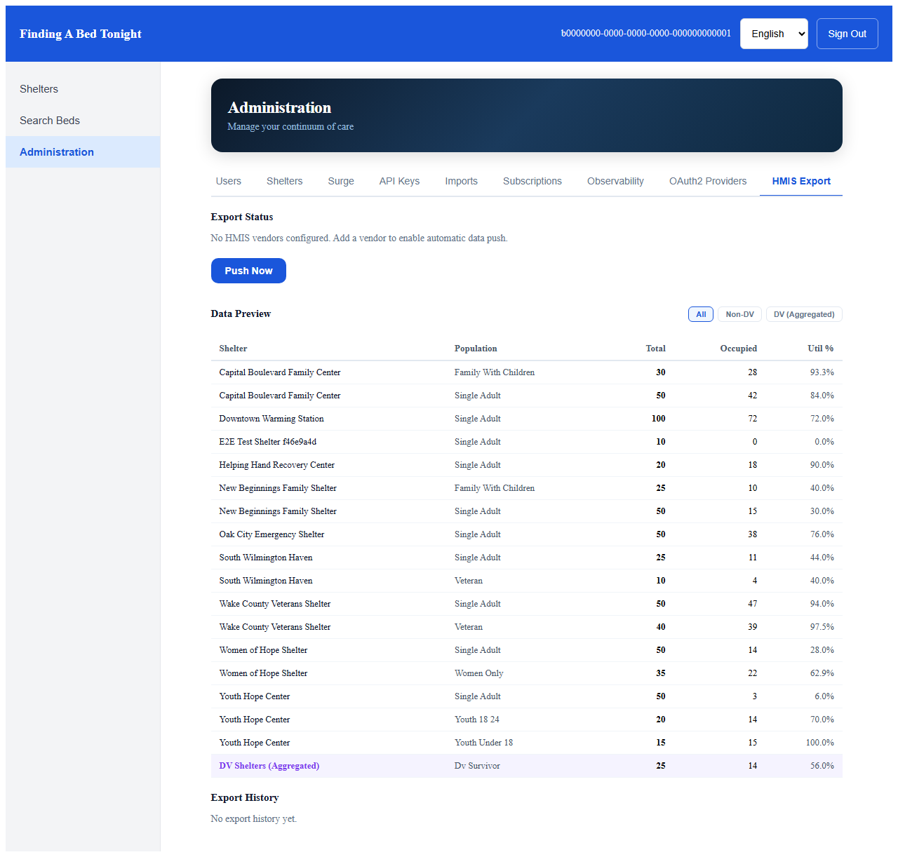
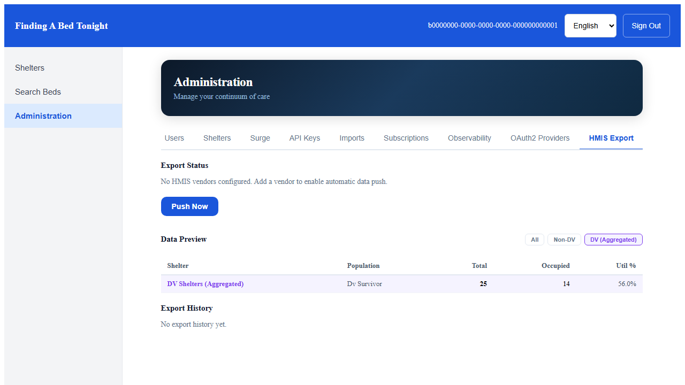
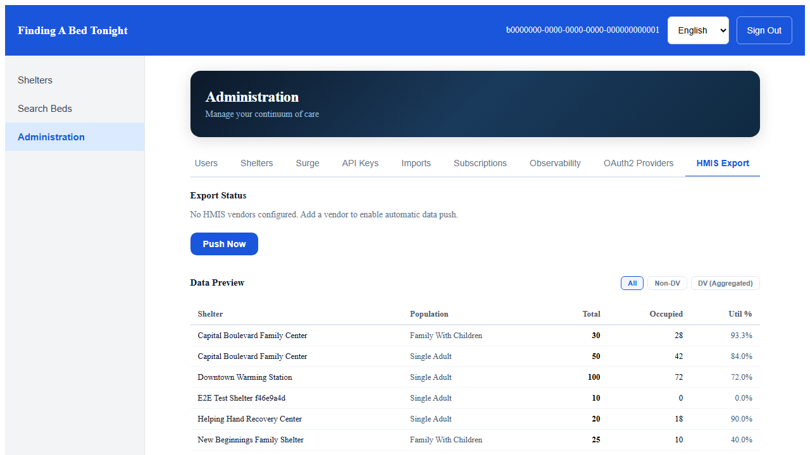
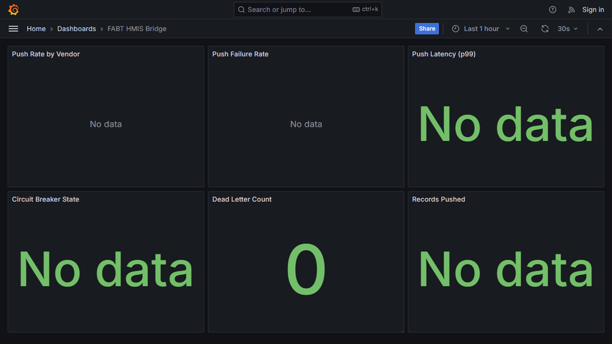

No Client PII
FABT pushes project-level bed inventory (HMIS Element 2.07) — beds total, beds occupied, population type, utilization rate. This is project descriptor data, not client-level PII. No client consent is required. DV shelter data is aggregated across all DV shelters before push — individual DV shelter occupancy is never sent.
Admin HMIS Export Tab
The HMIS Export tab in the Admin panel shows export status (configured vendors, push schedule), a Push Now button for manual triggers, a data preview table with utilization percentages, and export history. DV shelters appear as a single aggregated row at the bottom — never individual shelter data.

The data preview supports filtering: All, Non-DV, or DV (Aggregated). When DV is selected, only the aggregated row appears — showing total DV beds and occupancy across all DV shelters without revealing individual shelter data. This prevents small-n inference that could identify survivors.

The Push Now button triggers an immediate push to all enabled HMIS vendors. The export status section shows configured vendors with their type, enabled/disabled state, and push interval. Dead letter entries (failed pushes after 3 retries) are highlighted for manual retry.

Operational Monitoring (Optional)
The HMIS Bridge Grafana dashboard provides operational visibility: push rate per vendor, failure rate, push latency (p99), circuit breaker state, dead letter queue size, and total records pushed. Available only when the observability stack is active (--observability).

Vendor Adapters
FABT supports multiple HMIS vendors per tenant via a strategy pattern: Bitfocus Clarity (REST API), WellSky (HMIS CSV), and Eccovia ClientTrack (REST API). The outbox pattern ensures pushes survive application restarts. Failed pushes retry 3 times, then move to a dead letter queue for manual intervention.